10.2 SARSA: 온-정책 시간차 제어
(상태, 행동, 보상, 다음 상태, 다음 행동)의 연속적인 5단계 상호작용 흐름을 뜻하는 SARSA(살사, State-Action-Reward-State-Action) 알고리즘을 공부합니다.
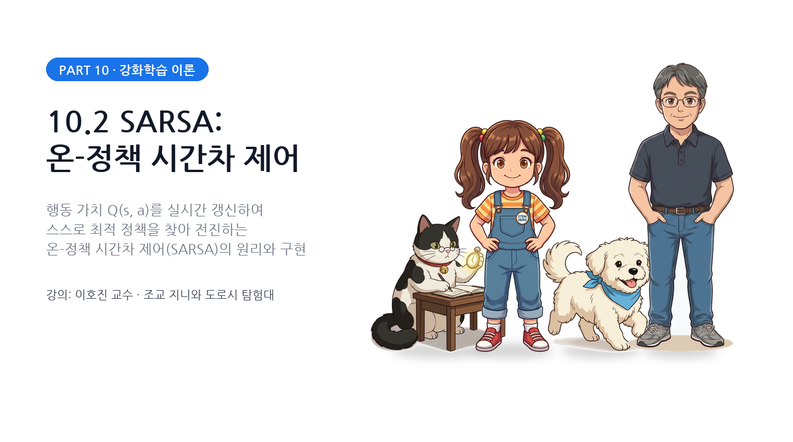
그림 10-2-1 온-정책 시간차 제어(On-Policy TD Control)의 핵심 원리와 SARSA 알고리즘 전체 조감도온-정책(On-policy) 제어 루프 하에서 가치 평가와 정책 개선을 한 걸음 단위로 교차 실행하는 구조를 귀여운 스펠링 블록체인 비유와 직관적인 파이썬 코드 분석을 통해 확실하게 정복해 봅시다!
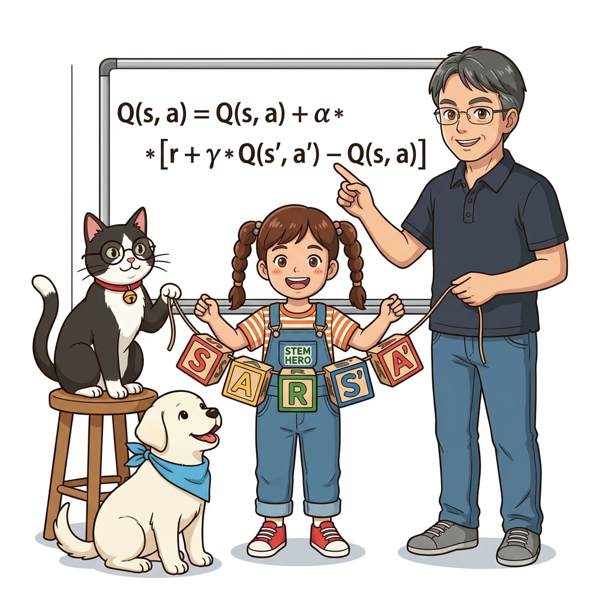
그림 10-2-2 온-정책 시간차 제어를 실현하기 위해 다섯 개의 알파벳 문자 블록 S, A, R, S, A를 체인으로 엮어 들고 있는 도로시와 지니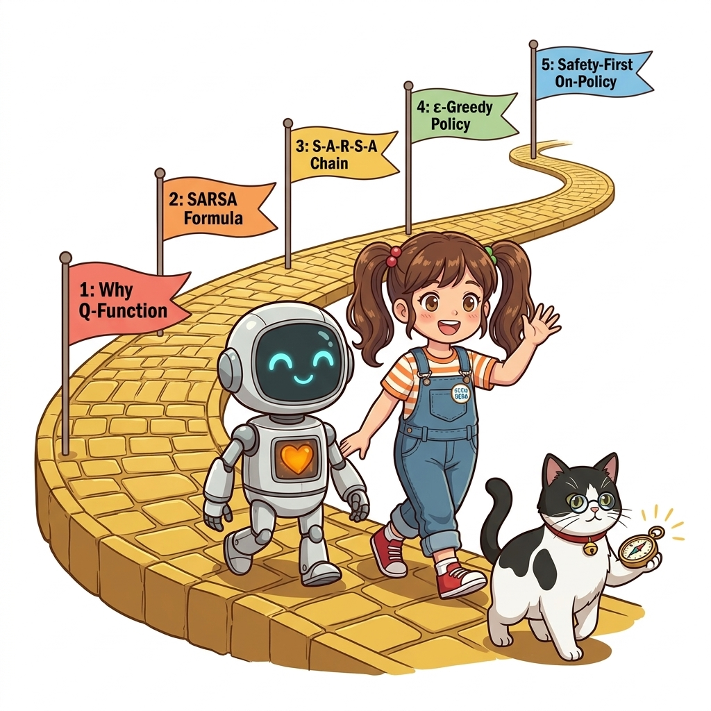
그림 10-2-3 10.2절 SARSA 온-정책 시간차 제어의 완성을 향해 나아가는 5대 마일스톤 학습 로드맵- 학습 목표:
- 상태 가치 V(s)만으로는 환경 모델 없이 행동을 선택할 수 없는 이유와 행동 가치 Q(s, a)가 주인공으로 등극하는 필연성 이해
- 1-스텝 TD 상태 가치 갱신식을 행동 가치 함수로 자연스럽게 확장하여 SARSA 갱신 공식 유도
- (상태, 행동, 보상, 다음 상태, 다음 행동)으로 이어지는 5단계 튜플 S-A-R-S-A의 메커니즘과 네이밍 기원 파악
- 온-정책 제어의 핵심 딜레마(탐색 vs 활용)를 해결하는 ε-탐욕(ε-greedy) 정책의 수학적 확률 구조 분석
- 크기 2의 슬라이딩 윈도우(
deque(maxlen=2)) 버퍼와 에피소드 종단 플러시(Flush)를 포함한SarsaAgent파이썬 구현 - SARSA 특유의 “보수적 안전 운전(안전제일주의)” 학습 성향을 절벽/함정 회피 실험 결과를 통해 심층 규명
10.2.1 온-정책 SARSA의 수학적 원리
앞 절(10.1절)에서는 시간차(TD) 학습법으로 정책 평가(Policy Evaluation)를 수행했습니다.
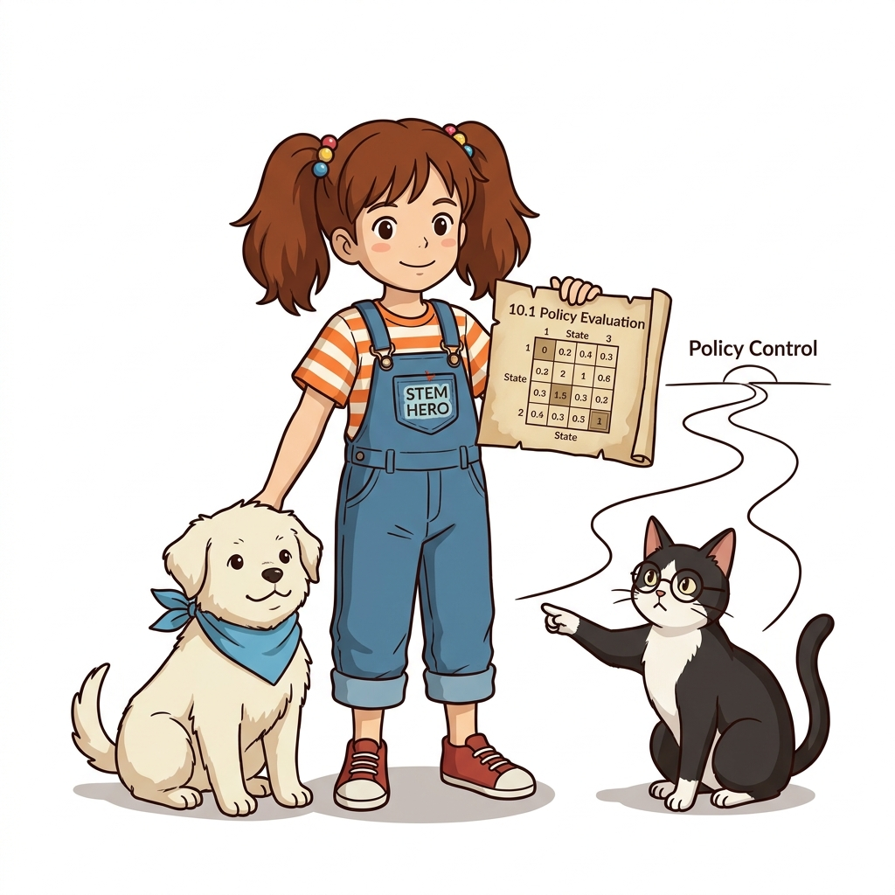
그림 10-2-4 10.1절에서 완성한 그리드월드 가치 지도를 살펴보며 정책 평가에서 새로운 정책 제어로의 도약을 준비하는 도로시와 친구들즉, 주어진 고정된 무작위 정책 π의 상태 가치 함수 Vπ(s)를 에피소드가 끝나길 기다리지 않고 실시간으로 추정하는 법을 배웠습니다.
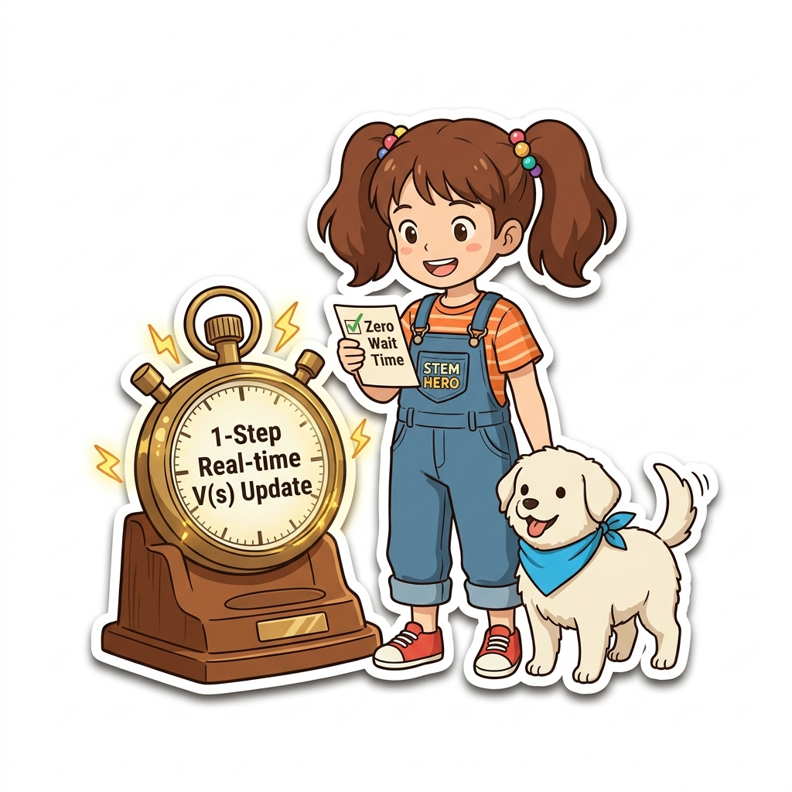
그림 10-2-5 1-스텝 이동 즉시 가치를 갱신하여 대기 시간이 전혀 없는 실시간 TD 정책 평가의 신속함하지만 강화학습의 궁극적인 목표는 단순히 현재 정책의 점수를 매기는 데 그치지 않고, 환경에서 가장 많은 누적 보상을 얻어내는 최적의 행동 정책을 찾아내는 정책 제어(Policy Control)에 있습니다.
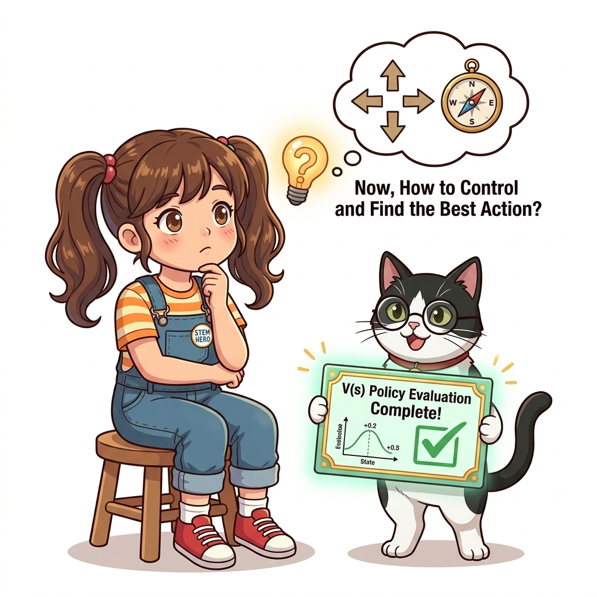
그림 10-2-6 10.1절에서 완성한 상태 가치 V(s) 평가 점수표를 들고, 이제 어떻게 최적의 행동을 찾아낼지 깊은 생각에 잠긴 도로시와 지니정책 제어는 항상 다음의 두 단계를 무한히 교차하며 최적 정책에 수렴해 갑니다:
- 평가(Evaluation): 현재 정책을 따를 때 각 행동이 얼마나 유익한지 행동 가치(Q)를 측정합니다.
- 개선(Improvement): 측정된 행동 가치를 바탕으로 더 나은 행동을 선택하도록 정책을 탐욕화(Greedy)합니다.
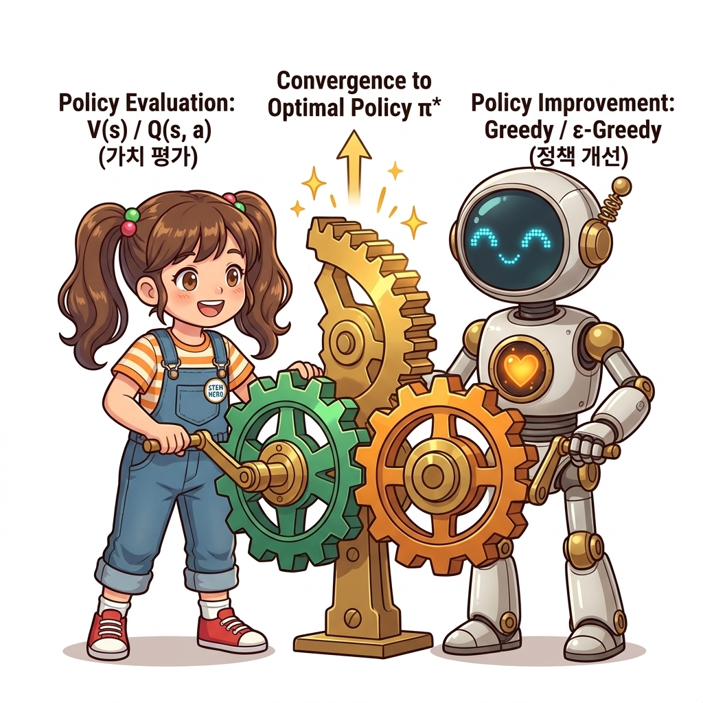
그림 10-2-7 평가(Evaluation)와 개선(Improvement)의 두 거대한 황금 톱니바퀴가 끊임없이 맞물려 돌며 최적 정책으로 전진하는 일반화된 정책 반복(GPI) 메커니즘1) 왜 상태 가치 V(s) 대신 행동 가치 Q(s, a)를 써야 할까?
앞 절에서는 상태 가치 함수 Vπ(s)를 평가했습니다.
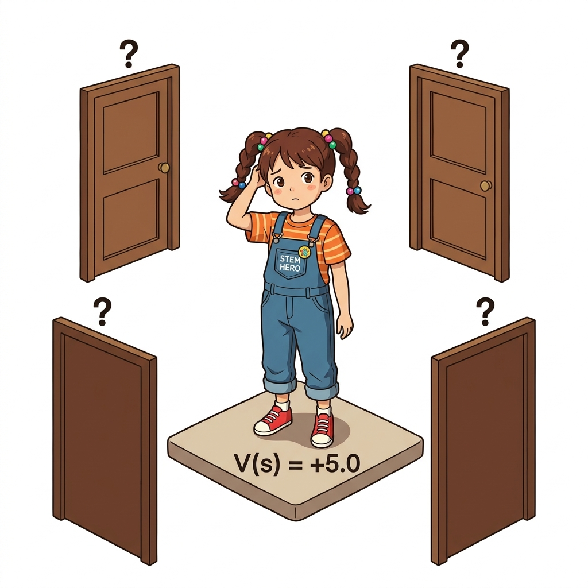
그림 10-2-8 발밑의 현재 상태 점수 V(s)=+5.0는 알지만 사방의 문에 전이 확률 p가 없어 어느 문을 열어야 할지 알 수 없는 상태 가치의 한계| 그러나 *환경 모델(전이 확률 *p(s’ | s, a)과 보상 함수)을 모르는 모델 프리(Model-Free) 환경에서는 상태 가치 함수만으로는 정책을 개선할 수 없습니다.** |
그림 10-2-9 전이 확률 p와 보상 함수 r이라는 핵심 퍼즐 조각이 사라진 미궁 속에서, 지도가 없어도 스스로 행동을 결정할 새로운 나침반을 찾는 틴맨 로봇과 이호진 교수님
만약 Vπ(s)를 사용하여 상태 s에서 가장 좋은 최선의 행동을 고르려면 다음과 같이 환경 모델을 알아야만 합니다:
*탐욕 행동 = argmax*a* ∑*s*’ *p(s’ s, a) · [r(s, a, s’) + γVπ(s’)]** (식 10.8b: 상태 가치 기반의 행동 선택)
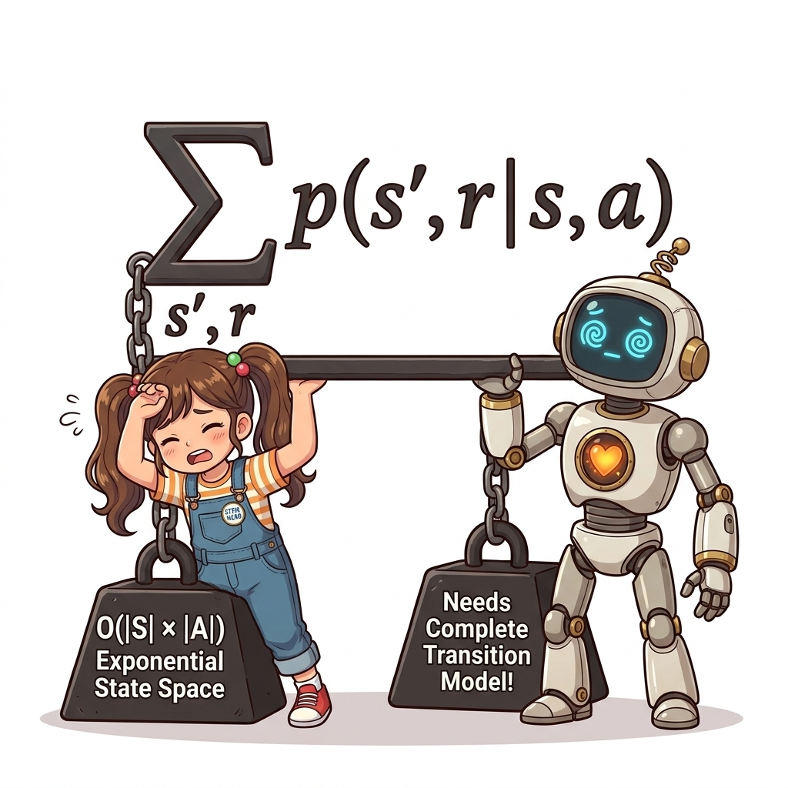
그림 10-2-10 모든 가능한 다음 상태 s‘를 전수조사해야 하는 시그마(∑)의 무거운 쇠사슬 족쇄: 환경 전이 지도를 모르면 결코 계산할 수 없는 근본적 한계| 하지만 우리는 에이전트가 현실 세계나 복잡한 게임 속을 직접 부딪치며 배운다고 가정하므로, 바람이 불 확률이나 장애물이 움직일 *확률인 *p(s’ | s, a)를 전혀 모릅니다!** |
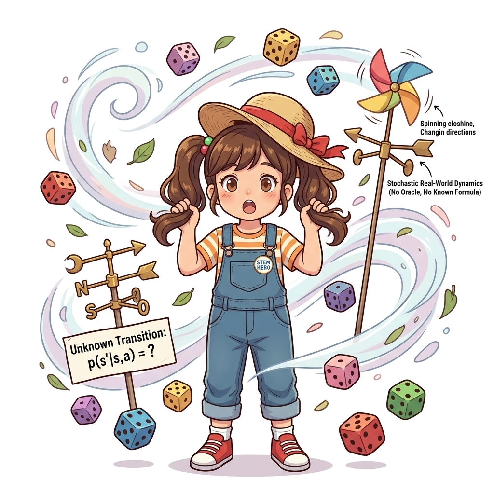
그림 10-2-11 제멋대로 방향을 바꾸는 거센 바람과 예측 불가능하게 구르는 주사위: 현실 세계의 자연 전이 확률은 사전에 고정된 표로 주어지지 않습니다.환경의 전이 확률 지도가 안개 속에 가려져 있다면, 다음 상태들의 가치 V(s‘)가 아무리 정확해도 어떤 행동을 골라야 그 상태로 갈 수 있는지 알 길이 없습니다.
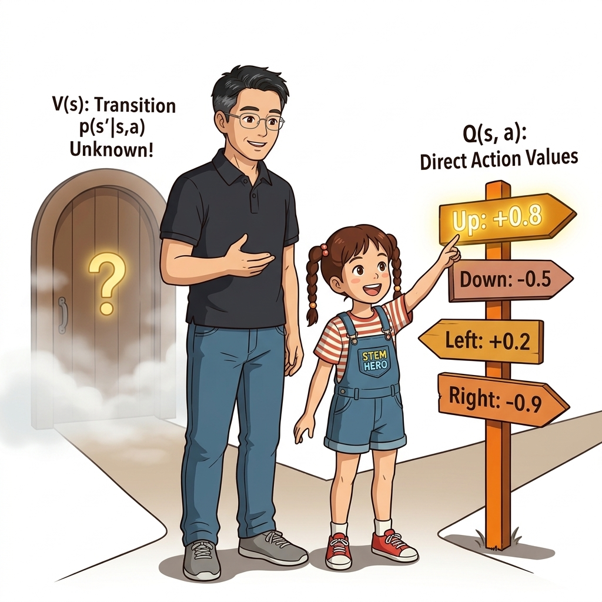
그림 10-2-12 미지의 안개 속에서 길을 찾는 갈림길 비유: 전이 확률 p를 몰라 눈이 가려진 V(s)의 문(왼쪽) vs 행동별 점수가 명확히 적힌 표지판을 보고 즉시 최선의 길을 고르는 Q(s, a)의 이정표(오른쪽)반면, 각 상태에서 특정 행동을 취했을 때의 미래 누적 수익을 담고 있는 행동 가치 함수(Q 함수, Qπ(s, a))가 준비되어 있다면 상황은 완전히 달라집니다:
μ(s) = argmaxa Qπ(s, a) (식 10.9: Q 함수 기반의 최적 행동 선택)
[식 10.9]를 보면 복잡한 전이 확률 p나 기댓값 계산이 전혀 필요 없습니다!
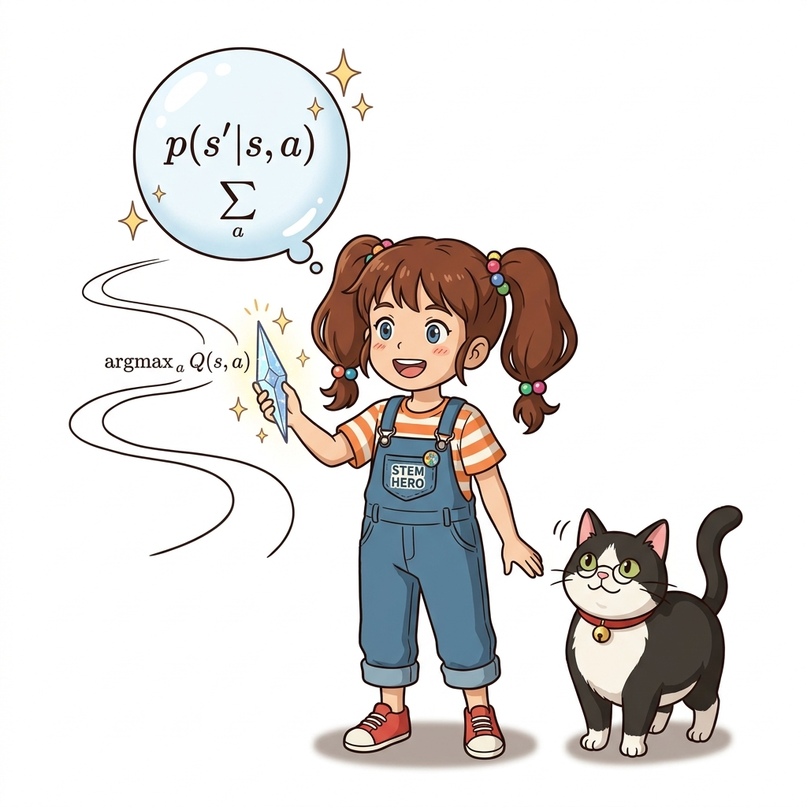
그림 10-2-13 전이 확률 p나 기댓값 전수조사 없이argmax Q(s, a) 하나로 즉각 최적 행동을 결정하는 Q 함수의 우아한 간결성
단순히 현재 상태 s에서 펼쳐진 여러 행동 선택지(상, 하, 좌, 우) 중 가장 높은 Q 값을 가진 행동을 고르기만 하면 즉시 최선의 탐욕 정책으로 개선됩니다.
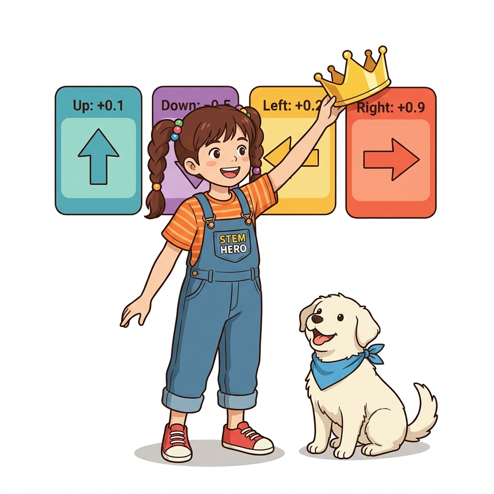
그림 10-2-14 4가지 행동 중 가장 높은 가치를 지닌 행동(Right: +0.9)에 황금 왕관을 씌워 즉시 탐욕 정책으로 개선하는 도로시이것이 바로 모델 프리 제어에서 Q 함수가 독보적인 주인공으로 등극하는 이유입니다.
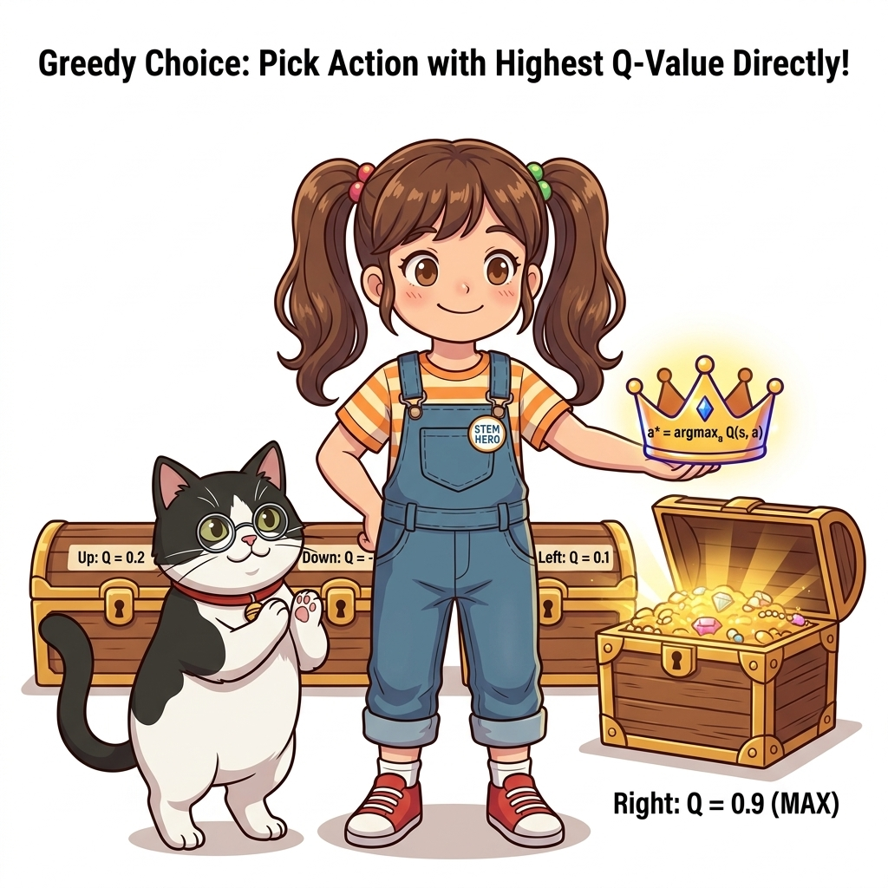
그림 10-2-15 복잡한 전이 확률 계산 없이, 4개의 행동 상자 중 가장 높은 점수(오른쪽: +0.9)에 황금 왕관을 씌워 즉시 최적 행동을 선택하는 도로시의 직관적argmax
2) 상태 가치 TD식을 Q 함수 TD식으로 확장하기
10.1절에서 배운 상태 가치 V의 1-스텝 TD 갱신식을 다시 떠올려 봅시다:
Vπ(St) ← Vπ(St) + α · [Rt + γVπ(St+1) - Vπ(St)] (식 10.10: 상태 가치 1-스텝 TD 갱신식)
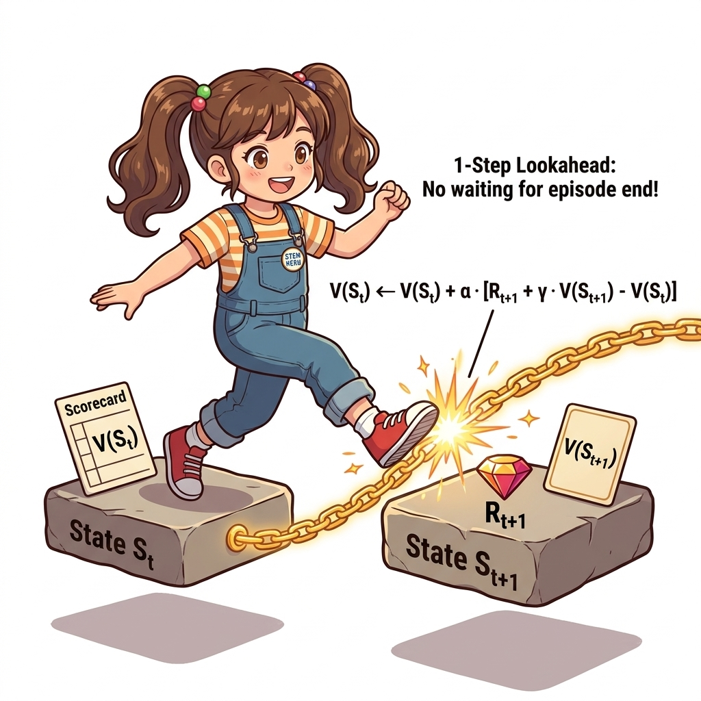
그림 10-2-16 징검다리에서 이전 발판 St에서 다음 발판 St+1로 딱 한 걸음 이동하자마자 즉시 가치를 갱신하던 10.1절 1-스텝 TD 사슬의 탄탄한 토대여기서 상태 가치 V(S)를 행동 가치 Q(S, A)로 자연스럽게 치환해 줍니다:
- 현재 상태의 가치: Vπ(St) → Qπ(St, At)
- 다음 상태의 가치: Vπ(St+1) → Qπ(St+1, At+1)
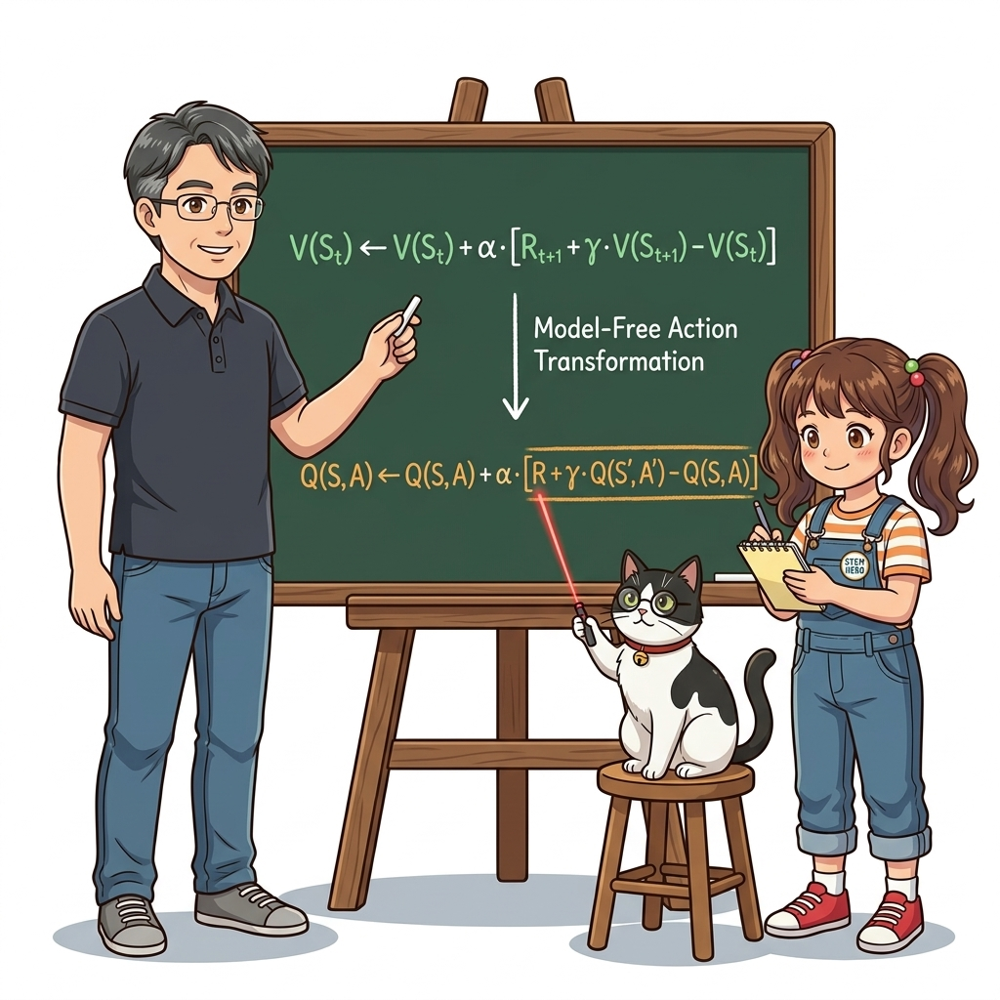
그림 10-2-17 이호진 교수님이 대형 녹색 칠판에서 10.1의 상태 가치 TD식(녹색 분필)을 행동 가치 Q(S, A) 점화식(주황색 분필)으로 명쾌하게 유도해 주시는 칠판 직강이 치환을 적용하면 Q 함수를 위한 TD 갱신식이 마침내 완성됩니다:
Qπ(St, At) ← Qπ(St, At) + α · [Rt + γQπ(St+1, At+1) - Qπ(St, At)] (식 10.11: SARSA 갱신 점화식)
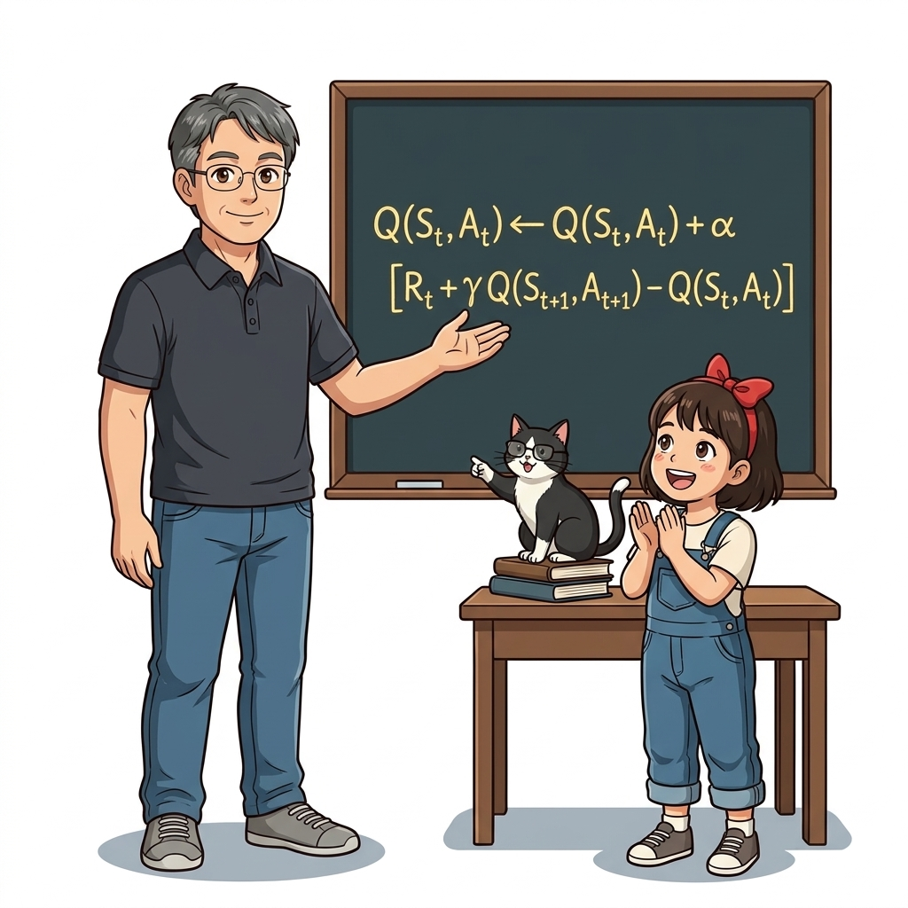
그림 10-2-18 칠판에 황금빛 분필로 적힌 SARSA 가치 갱신 점화식 [식 10.11]을 가리키며 열강하시는 이호진 교수님과 도로시여기서 괄호 안의 오차 항목인 [Rt + γQπ(St+1, At+1) - Qπ(St, At)]를 TD 오차(TD Error, δt)라고 부릅니다.
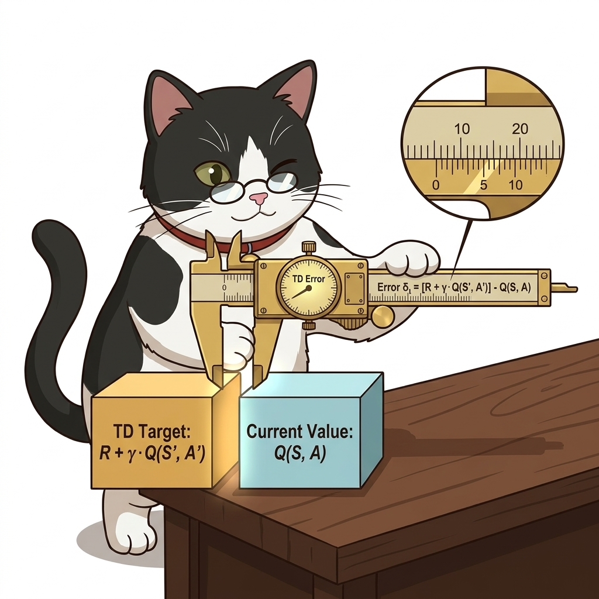
그림 10-2-19 지니 조교가 정밀 황금 버니어 캘리퍼스로 1단계 미래의 목표 기준점(R + γQ)과 현재 예측치(Q) 사이의 미세한 간격 오차(δt)를 정밀 측정하는 비유3) 5단계 상호작용 체인: S-A-R-S-A의 비밀
이 갱신식을 실행하기 위해 필요한 데이터 조각들을 시간 순서대로 나열해 봅시다:
- 시간 t에서의 현재 상태: St
- 시간 t에 에이전트가 실제로 취한 행동: At
- 환경으로부터 즉시 되돌려받은 보상: Rt
- 새로 도달하게 된 다음 상태: St+1
- 정책에 따라 다음 상태에서 실제로 선택한 다음 행동: At+1
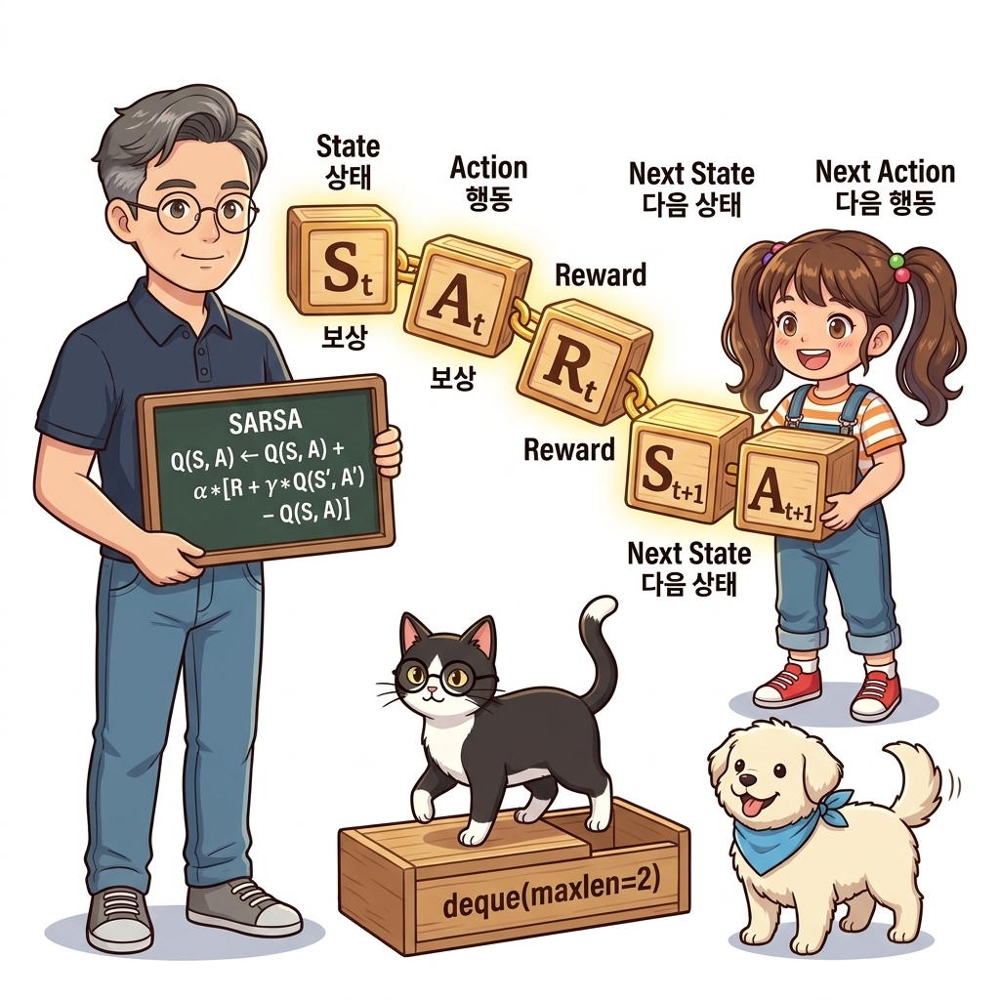
그림 10-2-20 (상태, 행동, 보상, 다음 상태, 다음 행동)의 5단계 상호작용 체인이 완성되어야 비로소 한 걸음 전의 Q 가치를 갱신할 수 있는 SARSA의 부트스트랩 메커니즘SARSA의 이름 유래
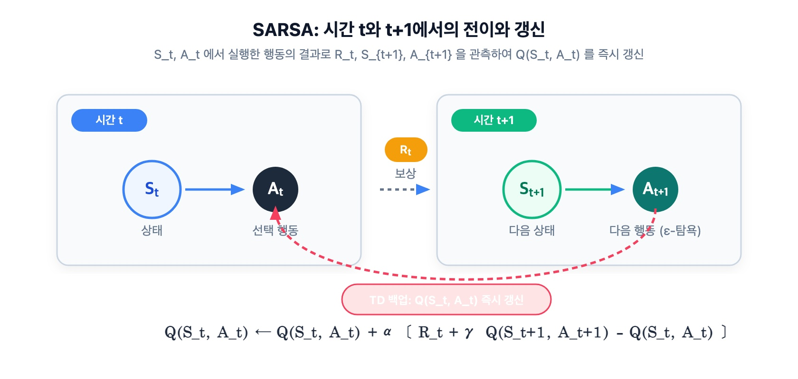
그림 10-2-21 시간 t와 t+1에서의 상태와 행동 전이 구조. (St, At) 쌍에서 출발하여 보상 Rt를 얻고 다음 (St+1, At+1) 쌍으로 이어지는 백업 트리이 다섯 개 튜플의 앞 글자를 따서 S - A - R - S - A, 즉 SARSA(살사)라는 매력적인 이름이 붙게 된 것입니다!
4) 온-정책(On-Policy)의 숙명: 탐색과 탐욕의 딜레마
SARSA는 대표적인 온-정책(On-Policy) 알고리즘입니다.
- 온-정책(On-Policy): 데이터를 수집하며 환경과 직접 부딪치는 정책(행동 정책, Behavior Policy)과, 가치를 평가하고 최적화하려는 목표 정책(대상 정책, Target Policy)이 완전히 동일한 하나의 정책인 방식입니다.
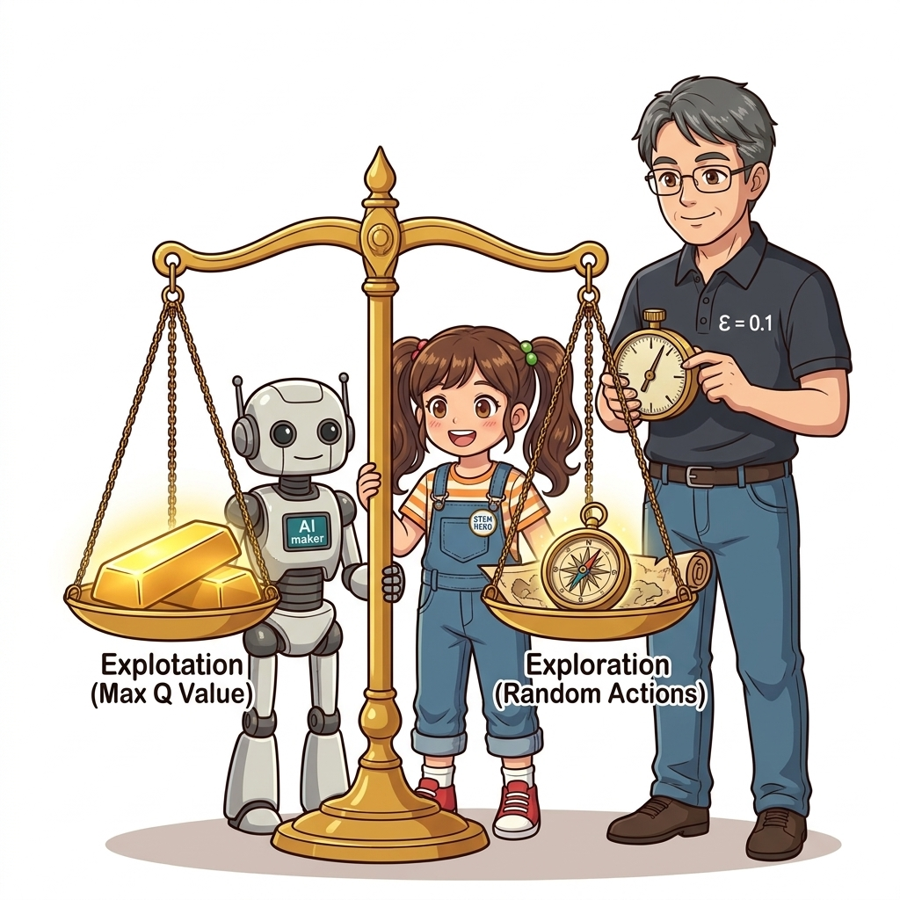
그림 10-2-22 온-정책 제어의 핵심 딜레마: 최고 Q 행동만을 챙기는 ‘탐욕적 활용(Exploitation)’과 새로운 보물 경로를 개척하는 ‘무작위 탐험(Exploration)’ 사이의 황금 균형을 맞추는 도로시와 틴맨 로봇온-정책 제어에서는 치명적인 딜레마가 하나 발생합니다:
 그림 10-2-23 익숙한 황금 길(활용)과 미지의 신비로운 숲길(탐험) 사이 갈림길에서 나침반을 들고 깊은 고민에 빠진 도로시와 토토
그림 10-2-23 익숙한 황금 길(활용)과 미지의 신비로운 숲길(탐험) 사이 갈림길에서 나침반을 들고 깊은 고민에 빠진 도로시와 토토
- 정책 개선의 목표: Q 값을 최대화하는 100% 탐욕적 행동(argmax)을 취해야 최적에 도달합니다.
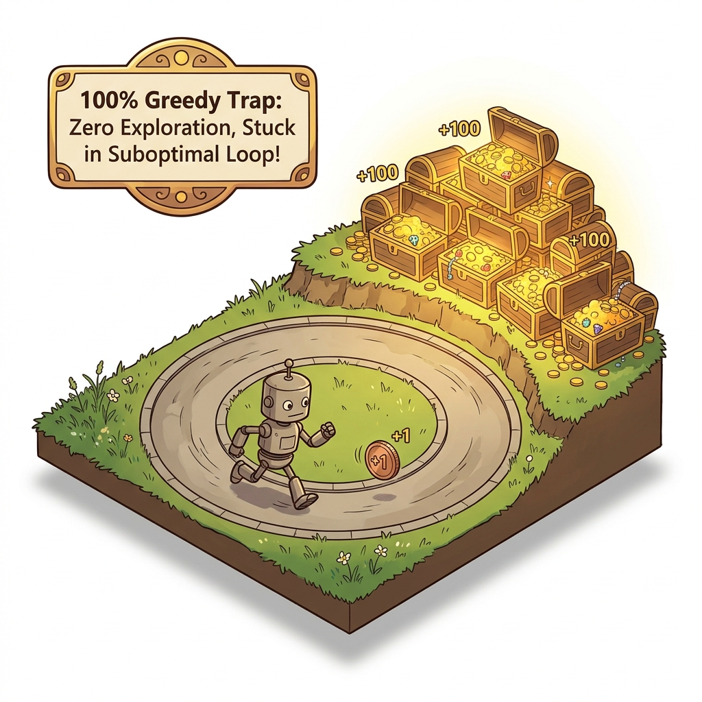
그림 10-2-24 100% 탐욕에 갇혀 눈앞의 작은 +1 동전 원형 트랙만 맴돌며 거대한 +100 보물산을 놓치는 국소 최적해 함정- 학습과 탐색의 필요성: 하지만 행동 정책이 100% 탐욕적이면, 이전에 우연히 발견한 길만 고집하게 되어 더 좋은 보상을 숨겨둔 미지의 경로를 영원히 탐색(Exploration)할 수 없게 됩니다.
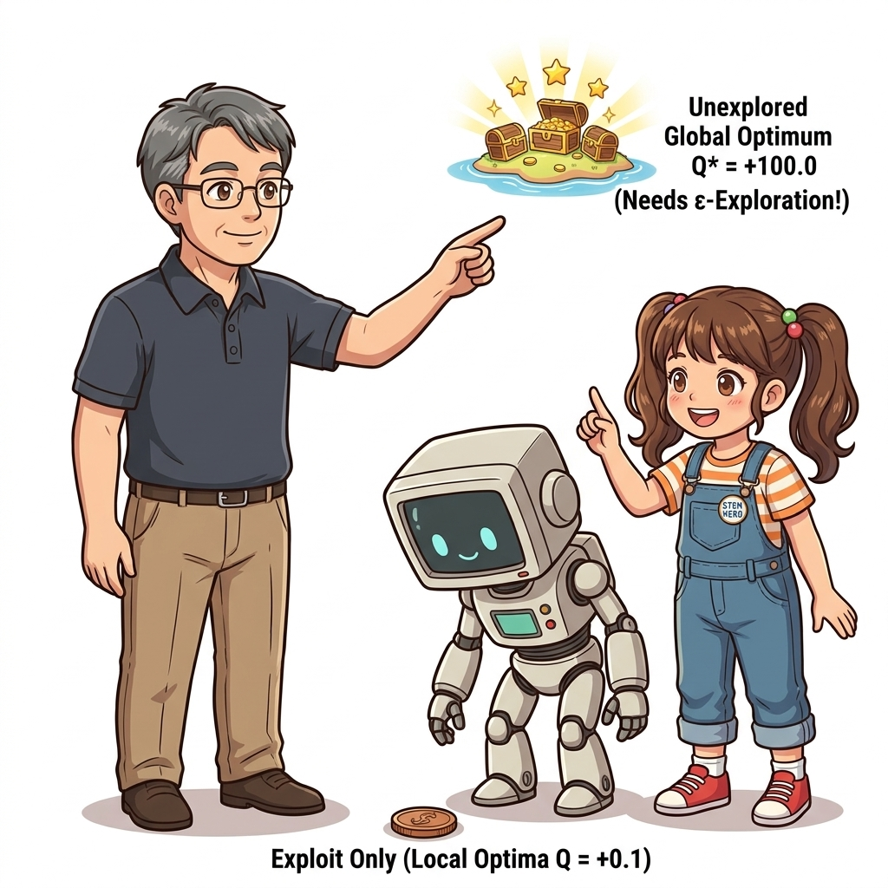
그림 10-2-25 발밑의 작은 동전(+0.1 보상)에 시야가 갇힌 틴맨 로봇에게, 수평선 너머 거대한 황금 보물섬(+100 보상)을 가리키며 탐색의 중요성을 일깨워주는 교수님과 도로시5) ε-탐욕 정책(ε-greedy Policy)의 수학적 분할
따라서 온-정책 SARSA에서는 다음과 같은 절묘한 타협안인 ε-탐욕 정책(ε-greedy Policy)을 채택합니다:
π(a | St) =
*1 - *ε + (ε / A ) (탐욕 행동: a = argmaxa’ Qπ(St, a’))** - ε / |A| (그 외 탐색 행동) (식 10.12: ε-탐욕 정책의 확률 분포)
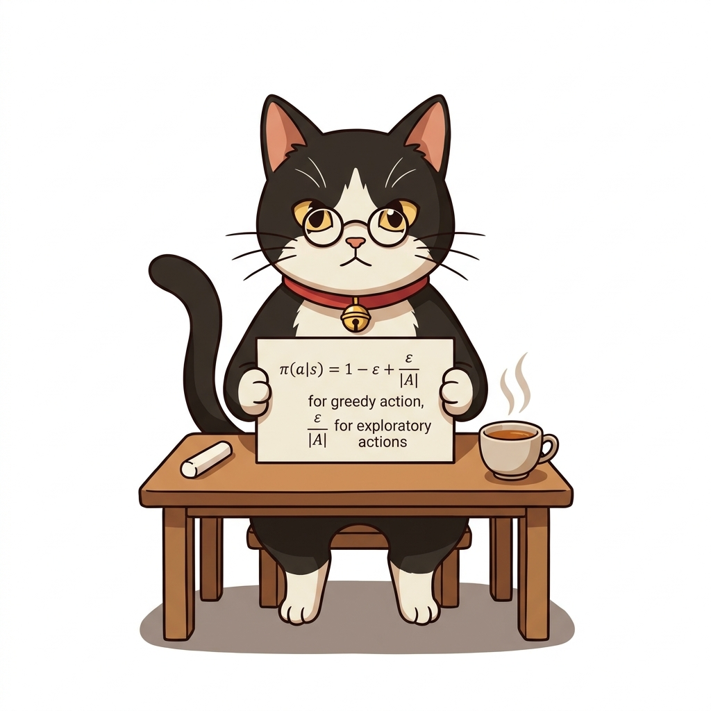
그림 10-2-26 지니 조교가 ε-탐욕 정책의 수식 카드를 들고 90% 활용과 10% 탐험의 절묘한 수학적 분할을 명쾌하게 해설하는 씬즉, 대부분의 경우(1 - ε)에는 가장 Q 값이 높은 최적 행동을 골라 실리를 챙기고, 작은 확률(ε, 예: 10%)로 무작위 행동을 시도하여 새로운 경로를 끊임없이 개척합니다.
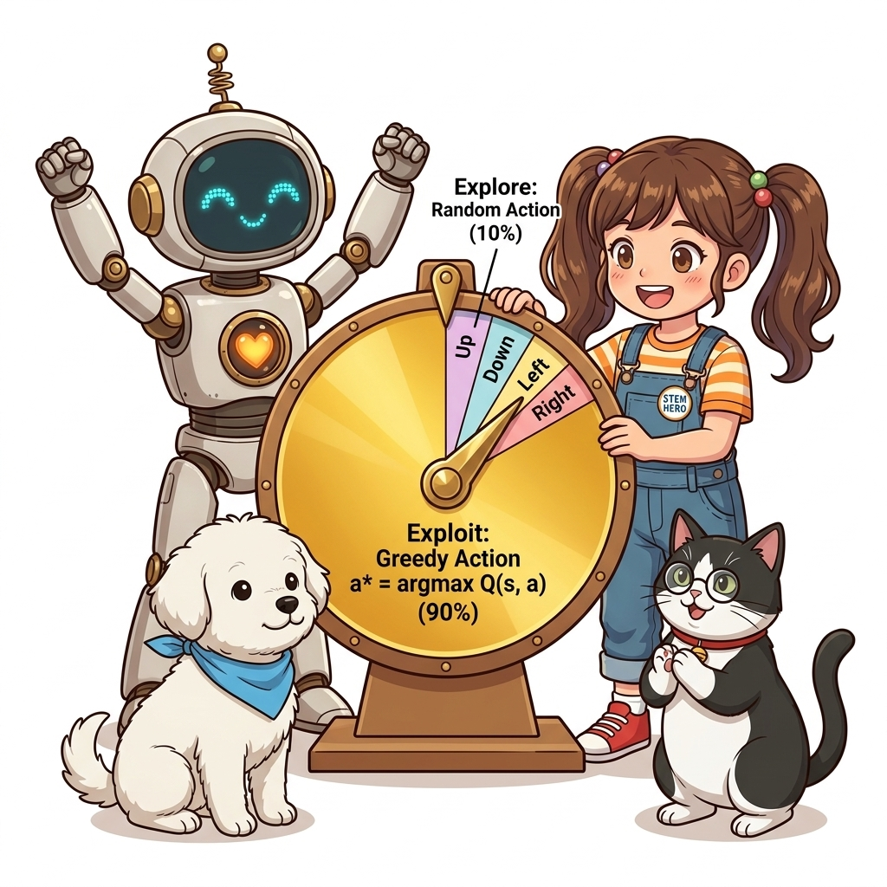
그림 10-2-27 ε-탐욕 정책의 룰렛 원판: 90% 이상(1 - ε)의 압도적 확률로 최고의 Q 행동을 선택하며 실리를 챙기고, 10%(ε)의 확률을 4개 행동(상·하·좌·우 각 2.5%)에 공평하게 나누어 미지의 길을 끊임없이 개척하는 탐험 메커니즘10.2.2 SARSA 에이전트 파이썬 구현
이제 온-정책 SARSA 알고리즘을 파이썬 코드로 구현해 봅시다.
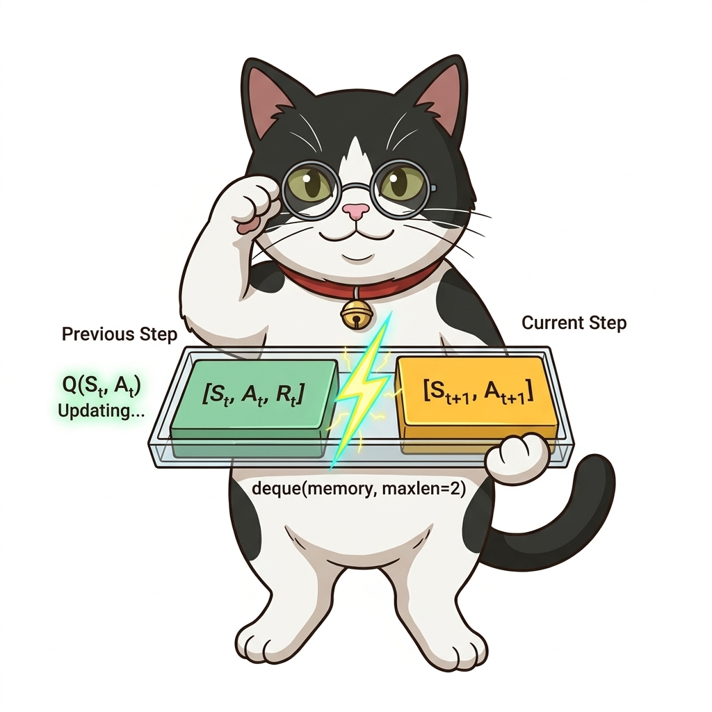
그림 10-2-28deque(maxlen=2) 2칸 슬라이딩 윈도우 버퍼 비유: 0번 칸의 (St, At, Rt)와 1번 칸의 (St+1, At+1)가 만나는 순간 번개처럼 Q 값이 즉시 갱신되는 2-스텝 버퍼 메커니즘
SarsaAgent 클래스 구현
from collections import defaultdict, deque
import numpy as np
from common.utils import greedy_probs
class SarsaAgent:
def __init__(self):
self.gamma = 0.9 # 할인율 γ (미래 보상 감가 계수)
self.alpha = 0.8 # 학습률 α (갱신 보폭)
self.epsilon = 0.1 # 탐색 확률 ε (10% 확률로 무작위 탐색)
self.action_size = 4 # 행동 가짓수 (상, 하, 좌, 우)
# 초기 정책: 4가지 행동에 대해 각 25%의 균등 확률
random_actions = {0: 0.25, 1: 0.25, 2: 0.25, 3: 0.25}
self.pi = defaultdict(lambda: random_actions)
self.Q = defaultdict(lambda: 0)
self.memory = deque(maxlen=2) # ❶ 최대 크기 2의 슬라이딩 윈도우 버퍼
def get_action(self, state):
action_probs = self.pi[state] # ❷ 현재 에이전트의 유일한 정책 self.pi에서 행동 확률 조회
actions = list(action_probs.keys())
probs = list(action_probs.values())
return np.random.choice(actions, p=probs)
def reset(self):
self.memory.clear()
def update(self, state, action, reward, done):
self.memory.append((state, action, reward, done))
if len(self.memory) < 2:
return # 데이터가 (S, A, R, S', A') 2세트 쌓이기 전에는 대기
# 버퍼의 0번째는 이전 시점 t, 1번째는 현재 시점 t+1
state, action, reward, done = self.memory[0]
next_state, next_action, _, _ = self.memory[1]
# ❸ 종단 상태(Goal)에 도달했다면 미래 가치는 0
next_q = 0 if done else self.Q[next_state, next_action]
# ❹ TD 목표(Target)와 식 (10.11)에 따른 self.Q 갱신
target = reward + self.gamma * next_q
self.Q[state, action] += (target - self.Q[state, action]) * self.alpha
# ❺ ε-탐욕 정책 개선
self.pi[state] = greedy_probs(self.Q, state, self.epsilon)
1) update() 메서드 코드 해부도
코드를 좀 더 상세히 분해하여 알아봅시다.
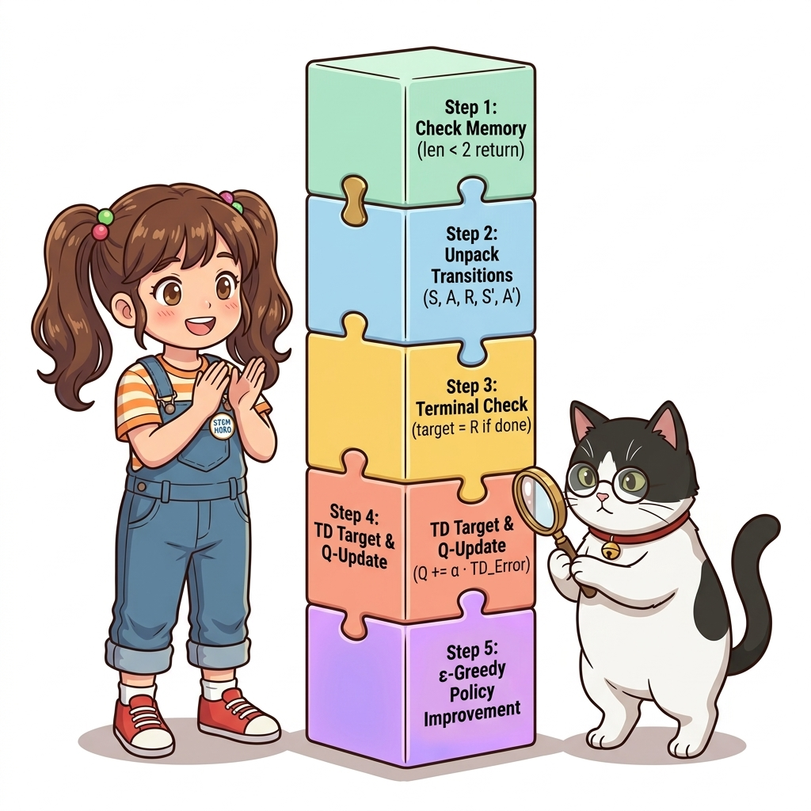
그림 10-2-29update() 메서드의 5대 핵심 라인이 레고 블록처럼 정교하게 맞물려 작동하는 코드 아키텍처 해부도
- ❶
self.memory = deque(maxlen=2): 2-스텝 슬라이딩 윈도우의 필연성- SARSA는 (St, At, Rt)를 겪었다고 해서 곧바로 갱신할 수 없습니다.
- 10.1절의 상태 가치 TD법은 다음 상태 St+1에 ‘도착’만 하면 즉시 V(St+1)을 꺼내어 이전 발판을 갱신할 수 있었습니다.
- 하지만 SARSA는 행동 가치 Q를 다루기 때문에, 다음 상태에서 “실제로 무슨 다음 행동 At+1을 취할 것인가”까지 결정되어야만 비로소 부트스트랩 목표치인 Q(St+1, At+1)을 꺼낼 수 있습니다!
- 따라서
maxlen=2인deque를 사용하여 최근 2개의 타임스텝 데이터를 슬라이딩 윈도우 형태로 간직하며, 데이터가 2세트 채워지기 전에는 갱신을 잠시 대기(if len(self.memory) < 2: return)합니다.
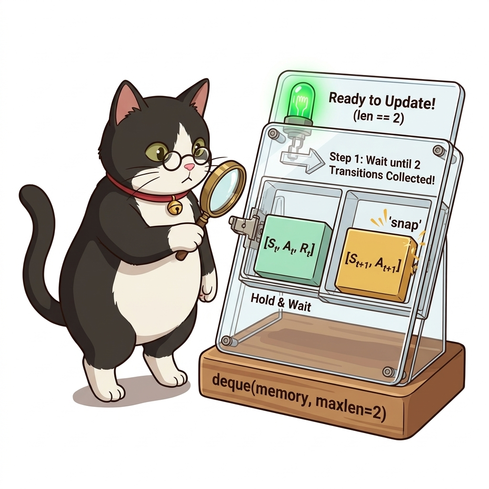
그림 10-2-30deque(maxlen=2) 슬라이딩 윈도우 내부 메커니즘: 0번 칸의 (St, At)가 1번 칸의 (St+1, At+1)를 만나 ‘Ready to Update!’ 등이 켜지며 가치를 갱신하는 정밀 기계 트레이
- ❷
get_action(self, state): 온-정책 단일 정책 확률 샘플링- 온-정책(On-policy)의 가장 큰 장점은 “행동을 취하는 뇌(Behavior Policy)”와 “가치를 평가받는 뇌(Target Policy)”가 완벽하게 하나로 통합되어 있다는 점입니다.
- 별도의 복잡한 가중치 보정(중요도 샘플링 등)을 할 필요 없이, 오직 하나의 유일한 정책
self.pi[state]에서 확률 비율대로 주사위를 굴려(np.random.choice(actions, p=probs)) 다음 행동을 직접 결정합니다. - 에이전트는 이 확률적 선택에 따라 환경에서 직접 부딪치고, 그 생생한 경험의 결과를 자신의 Q테이블에 정직하게 피드백합니다.
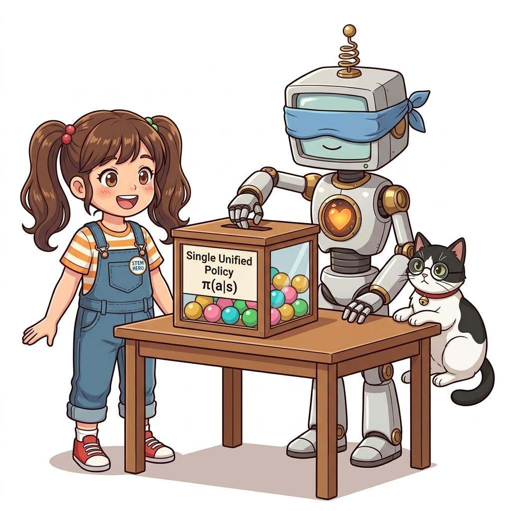
그림 10-2-31get_action() 온-정책 단일 정책 샘플링: 탐험과 평가가 분리되지 않고 하나의 통합 정책 상자 self.pi에서 직접 행동 구슬을 뽑아 실천하는 정직한 상호작용
- ❸
next_q = 0 if done else self.Q[next_state, next_action]: 종단 상태 0 처리의 엄밀성- 에이전트가 목표 지점(Goal +1.0 또는 Trap -1.0)에 도달하여 게임이 완전히 끝났다면(
done == True), 그 이후로 얻을 수 있는 추가 미래 보상은 정의상 존재하지 않습니다! - 가치 함수란 ‘앞으로 얻게 될 미래 보상들의 할인 누적 합’이므로, 종료된 이후의 가치는 수학적으로 정확히 0이어야만 합니다.
- 만약 여기서 0 대신 기존 Q값을 부트스트랩해 버리면, 이미 끝난 게임에서 허깨비 미래 보상을 뻥튀기하는 치명적인 왜곡이 발생하므로 단호하게 0으로 자물쇠를 잠급니다.
- 에이전트가 목표 지점(Goal +1.0 또는 Trap -1.0)에 도달하여 게임이 완전히 끝났다면(
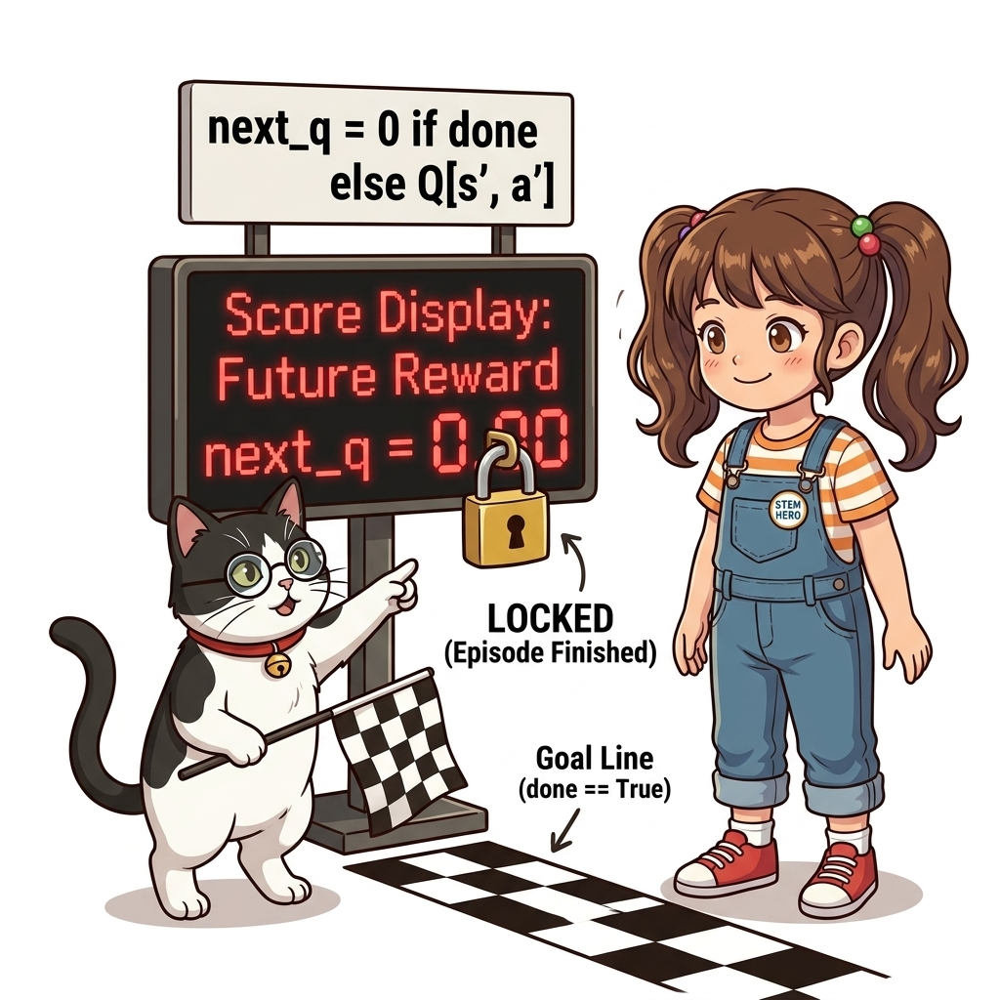
그림 10-2-32next_q = 0 if done else ... 종단 처리의 엄밀성: 결승선(Goal)에 도달하는 순간 미래 보상 카운터가 “0.00”으로 자물쇠 잠금되어 유령 부트스트랩을 완벽히 차단하는 안전장치
- ❹ Q 함수 갱신: TD 오차와 실시간 학습률 보폭
- 새로운 기준점인 TD 목표 (
target = reward + self.gamma * next_q)를 계산합니다. - 기존 예측치
self.Q[state, action]와의 차이인 TD 오차 (target - self.Q[state, action])를 측정한 뒤, 학습률self.alpha(0.8)를 곱해 그 방향으로 Q값을 즉각 업데이트합니다. - 10.1절의 상태 가치 TD식과 원리는 같지만, 칸(State)의 가치가 아니라 특정 칸에서 특정 방향으로 발을 뻗은 ‘행동(Action)’의 가치 타일이 실시간으로 업그레이드되는 것이 결정적인 차이입니다.
- 새로운 기준점인 TD 목표 (
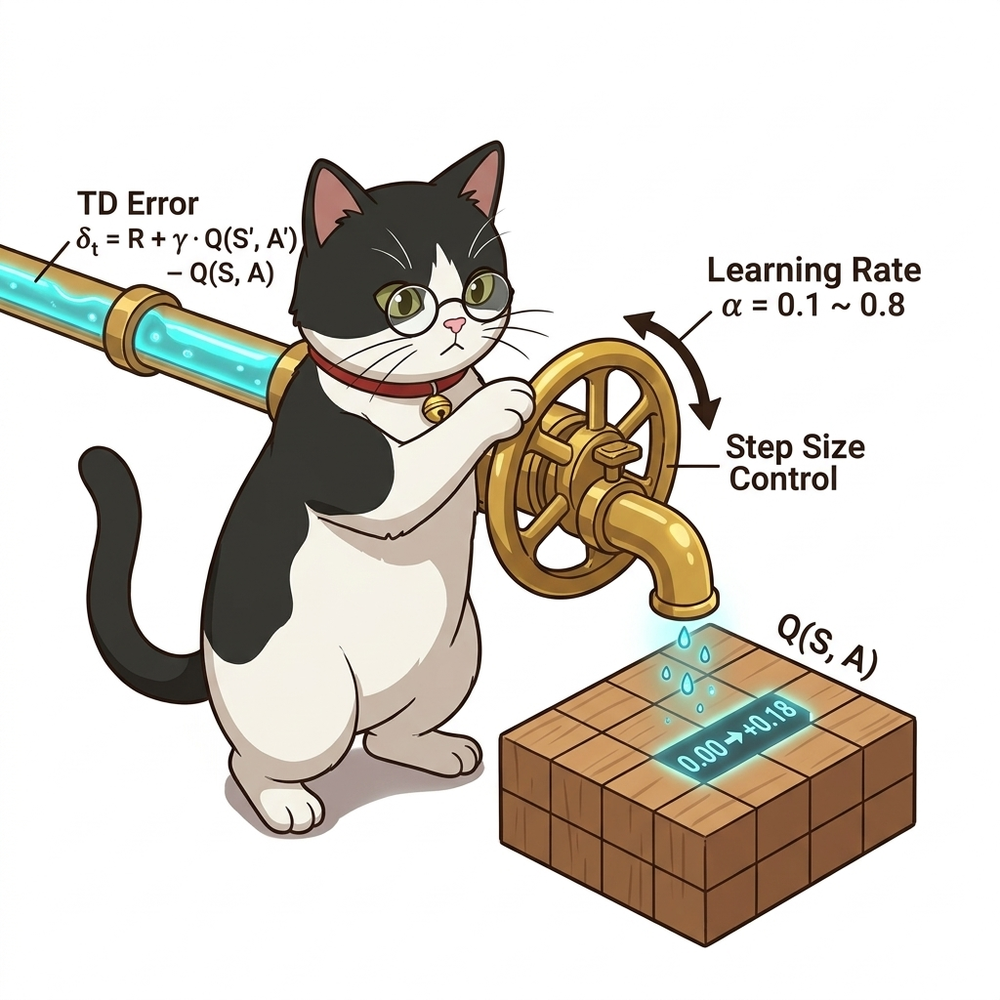
그림 10-2-33 지니 조교가 황금 학습률 밸브(α = 0.8)를 열어 TD 오차 신호를 Q테이블 저수조 칸칸마다 신선하게 채워 넣는 정교한 배관 비유- ❺ 정책 개선 (
greedy_probs): 1스텝 만에 진화하는 정책- 행동 가치 Q가 조금이라도 더 똑똑해졌다면, 에이전트의 행동 지침인
self.pi도 그 즉시 더 영리하게 업그레이드되어야 합니다! greedy_probs함수는 방금 수정된 Q값들을 스캔하여 가장 숫자가 큰 최선의 행동에1 - epsilon의 높은 확률(92.5%)을 부여하고, 나머지 3개 행동에epsilon / 4의 탐험 확률(각 2.5%)을 골고루 나누어 새로운 ε-탐욕 정책을 즉각 찍어냅니다.- 이로써 한 걸음 디딜 때마다 [가치 평가 갱신 → 정책 즉각 개선]이 1-스텝 만에 완료되는 완벽한 온라인 실시간 제어 루프가 완성됩니다!
- 행동 가치 Q가 조금이라도 더 똑똑해졌다면, 에이전트의 행동 지침인
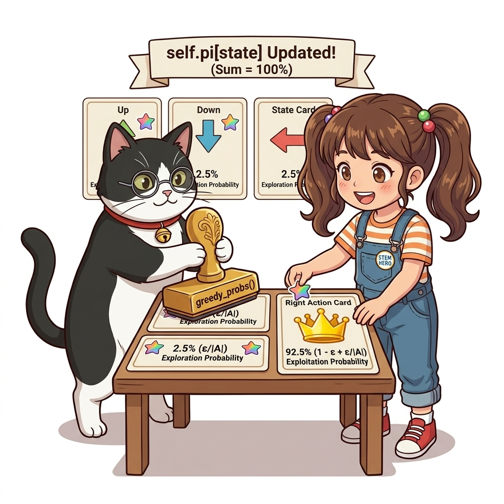
그림 10-2-34greedy_probs 정책 개선 스탬프 공방: 가장 똑똑해진 최선의 Q 행동에 황금 왕관(92.5%)을 찍고 알록달록 탐색 스티커(2.5%)를 붙여 실시간 최적 정책을 발행하는 활기찬 공방
2) SARSA 학습 루프와 종단 상태 플러시(Flush)
이제 그리드 월드 환경에서 SarsaAgent를 1만(10,000) 에피소드 동안 훈련시켜 봅시다.
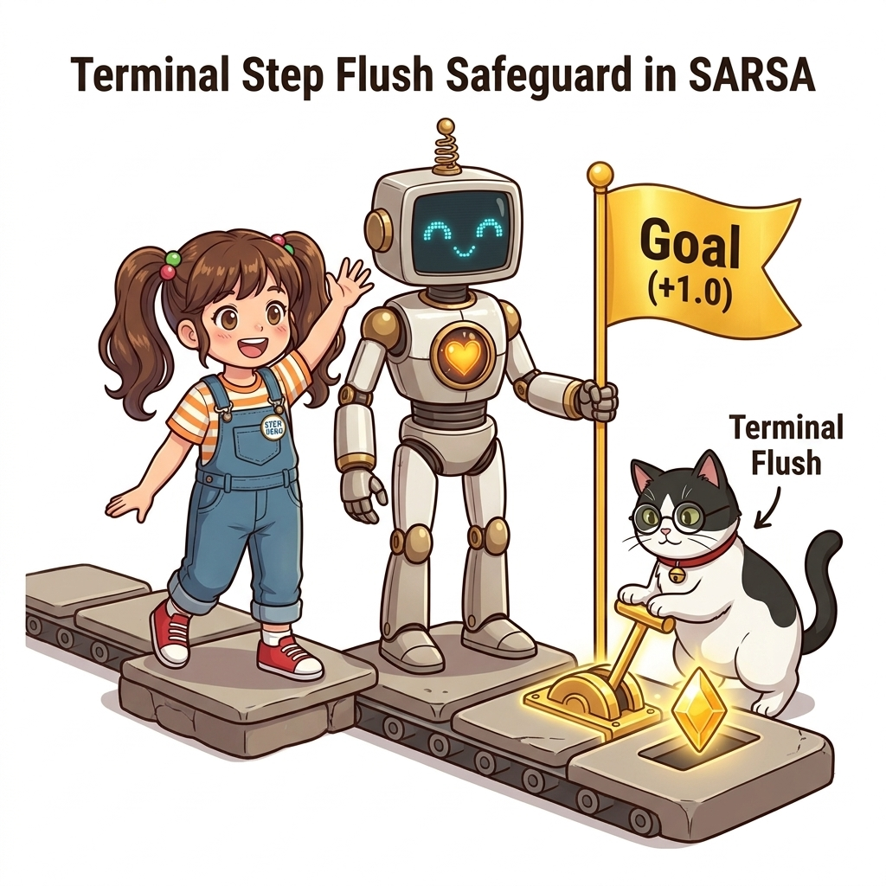
그림 10-2-35 골인 직전 마지막 스텝의 소중한 +1.0 보상이 버퍼에 방치되지 않도록 지니 조교가 황금 플러시 레버를 당겨 안전하게 갱신을 완료하는 비유from common.gridworld import GridWorld
env = GridWorld()
agent = SarsaAgent()
episodes = 10000
for episode in range(episodes):
state = env.reset()
agent.reset()
while True:
action = agent.get_action(state)
next_state, reward, done = env.step(action)
agent.update(state, action, reward, done) # ❶ 매 스텝마다 버퍼에 추가
if done:
# ❷ 목표(Goal)에 도달했을 때 마지막 스텝 강제 플러시!
agent.update(next_state, None, None, None)
break
state = next_state
# 학습 완료 후 최종 수렴된 Q 함수 시각화
env.render_q(agent.Q)
[!IMPORTANT] 🚨 종단 처리
agent.update(next_state, None, None, None)가 왜 필수적일까요?
agent.update()는 버퍼에 최소 2개의 데이터가 들어있어야memory[0]의 Q값을 갱신합니다.
만약 에이전트가 목표 지점에 막 골인하여done=True가 되었다면, 목표에 도착하기 직전 마지막 상태(예: 골 바로 앞 칸에서 오른쪽으로 이동한 결정적 행동)에 대한 데이터는 아직memory[0]에 머물러 있어 갱신되지 못한 채 루프가 끝나버릴 치명적인 위험이 있습니다!
따라서if done:블록 안에서 더미 데이터(next_state, None, None, None)를 한 번 더 버퍼에 밀어 넣어줌으로써, 가장 중요한 골 직전 행동에 +1.0의 큰 보상이 완벽하게 반영되도록 온전히 플러시(Flush)를 완료하는 것입니다.
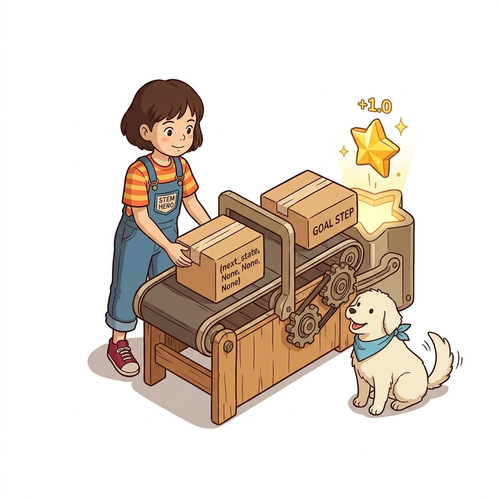
그림 10-2-36 2칸 컨베이어 벨트에 더미 데이터 패키지를 밀어 넣어 골인 직전 마지막 황금 보상(+1.0)을 안전하게 배출(플러시)시키는 도로시10.2.3 SARSA의 학습 결과와 보수적 안전 운전 특성
1만 회 학습 후 렌더링된 Q 함수와 정책을 확인해 봅시다.
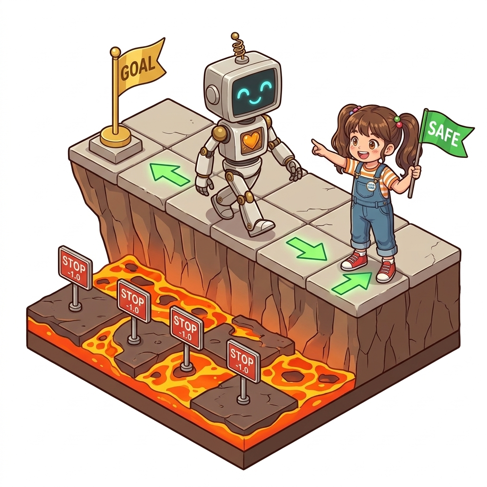
그림 10-2-37 3×4 그리드월드 디오라마 모형: 아래쪽 함정(-1.0 폭탄) 근처에 위험 경고 표지판이 세워져 있고, 틴맨 로봇이 위험한 지름길 대신 위쪽 벽면의 안전 우회로를 따라 평화롭게 걸어가는 모습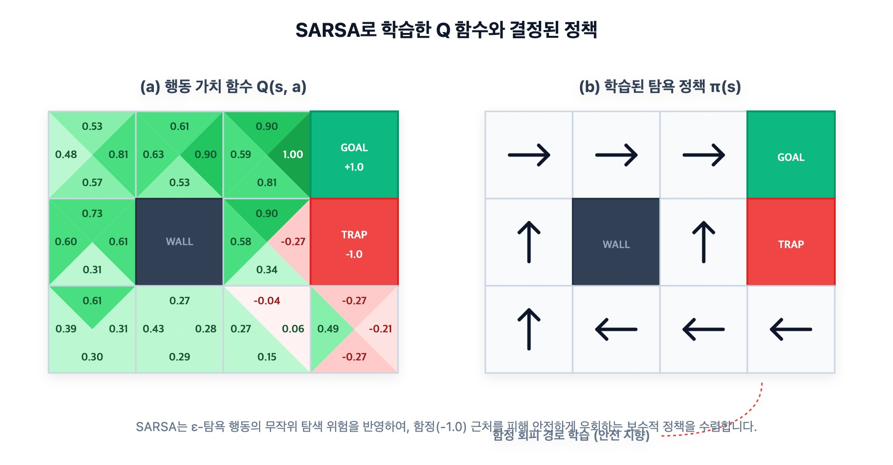
그림 10-2-38 SARSA로 획득한 그리드 월드 정책. 절벽/폭탄(-1.0) 칸 주변에서 위험을 피하기 위해 안전하게 멀리 우회하는 보수적인 경로가 형성됩니다.1) SARSA의 독특한 성향: “안전제일주의”
[그림 10-2-38]의 결과에서 대단히 흥미로운 점을 발견할 수 있습니다:
- 에이전트는 폭탄(-1.0) 칸 바로 옆 지름길이 있음에도 불구하고, 폭탄에서 멀리 떨어진 위쪽 벽 쪽으로 크게 우회하는 정책을 학습합니다.
 그림 10-2-39 폭탄 칸(-1.0) 바로 옆 아슬아슬한 지름길 대신, 위쪽 튼튼한 난간이 있는 안전 우회로를 선택해 미소 짓는 틴맨 로봇
그림 10-2-39 폭탄 칸(-1.0) 바로 옆 아슬아슬한 지름길 대신, 위쪽 튼튼한 난간이 있는 안전 우회로를 선택해 미소 짓는 틴맨 로봇
왜 이런 보수적인(Conservative) 결과가 나올까요?
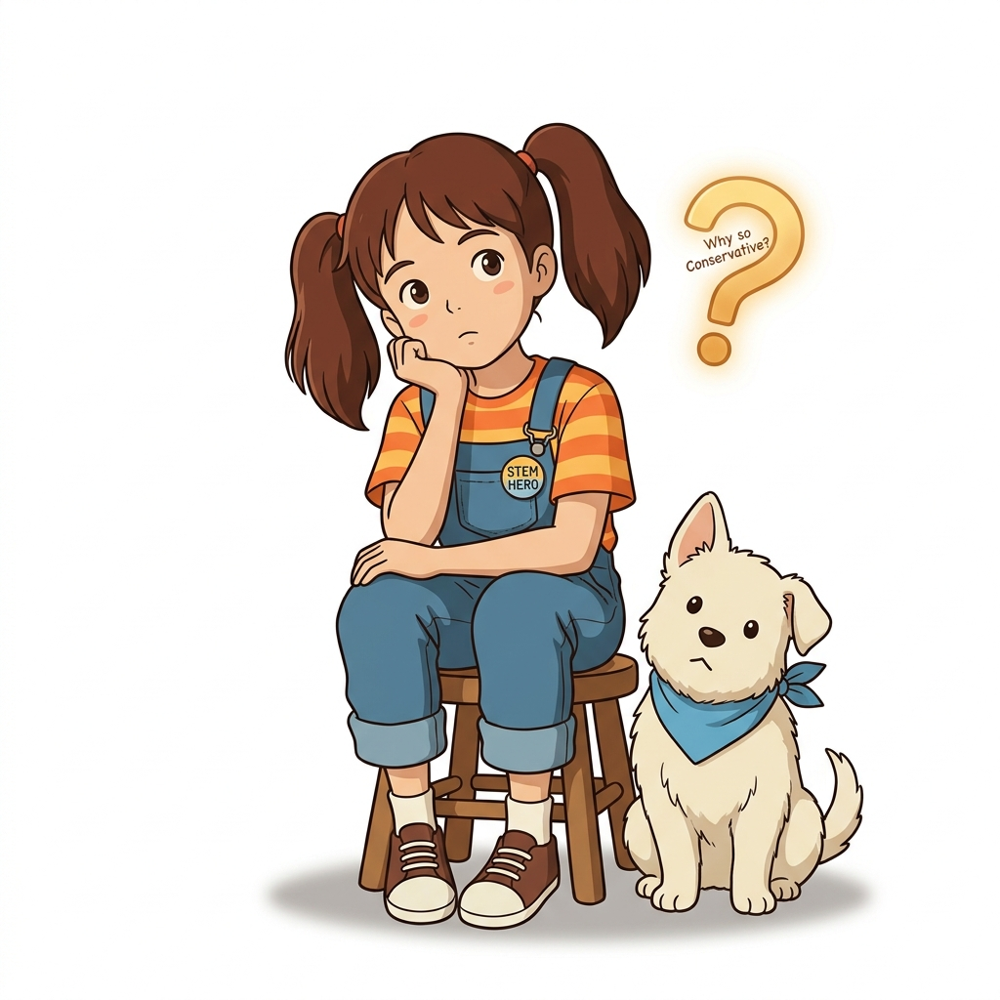
그림 10-2-40 “왜 SARSA는 거리가 더 먼 우회로를 골랐을까?” 호기심 가득한 황금 물음표와 함께 고개를 갸우뚱하는 도로시와 토토- SARSA는 온-정책(On-policy) 알고리즘입니다.
그림 10-2-41 전신 거울 속에서 실제 걸어가는 행동 정책(현실의 도로시)과 평가받는 대상 정책(거울 속 도로시)이 완벽히 일치하여 함께 움직이는 온-정책 동일성 비유
- 다음 상태에서 취할 행동 At+1 역시 ε-탐욕 정책으로 선택됩니다.
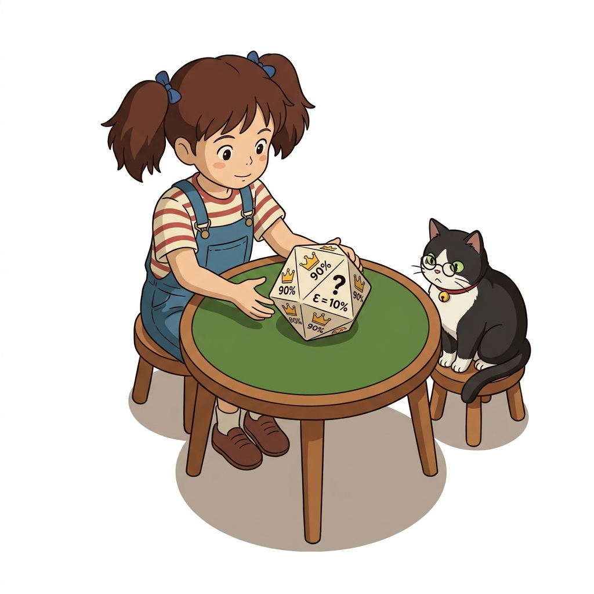
그림 10-2-42 90% 최선 행동과 10% 무작위 탐색이 새겨진 주사위를 굴려 다음 행동 $A_{t+1}$ 을 결정하는 도로시와 지니- 즉, 에이전트는 “내가 다음 순간에 ε(10%)의 확률로 엉뚱한 방향으로 발을 헛디딜 수 있다”는 사실을 스스로의 Q 가치 평가에 솔직하게 반영합니다!
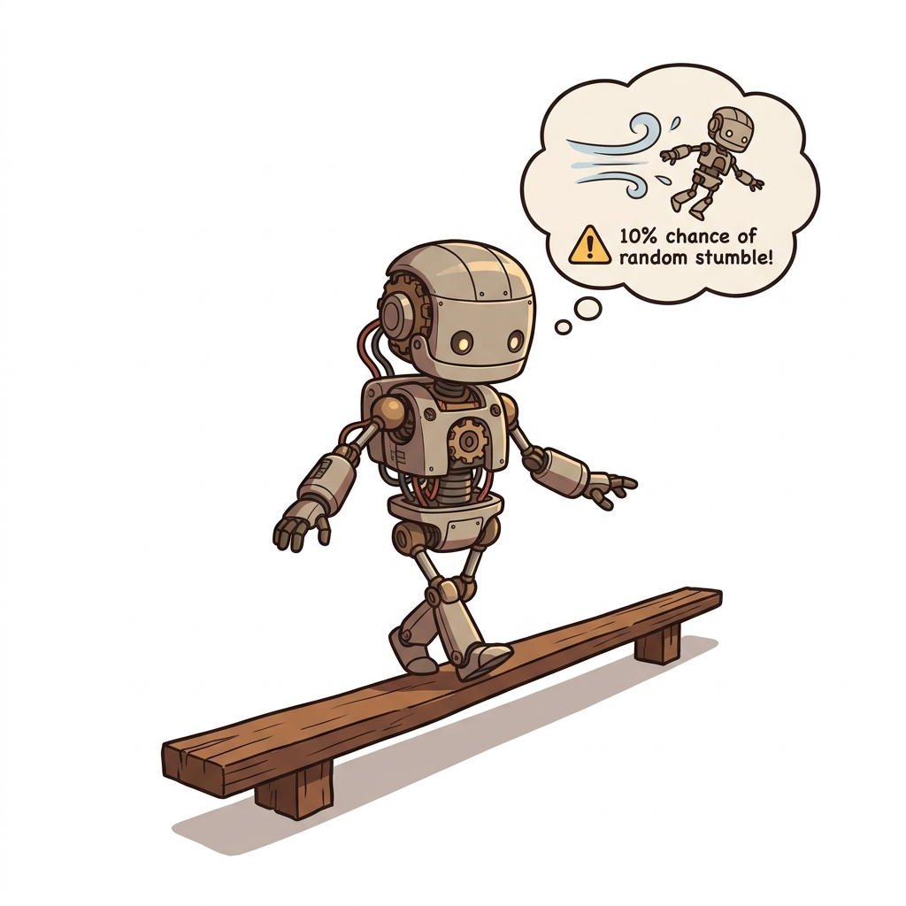
그림 10-2-43 좁은 평균대 위에서 “10% 확률로 발을 헛디딜 수 있다”는 사실을 인정하고 스스로 조심스럽게 균형을 잡는 틴맨 로봇- 폭탄 바로 옆 길을 걷다가 10%의 실수로 폭탄 칸에 빠지면 -1.0이라는 치명적인 감점을 받게 되므로, SARSA 에이전트는 아예 폭탄 근처에는 얼씬도 하지 않는 안전한 우회로를 최고 가치로 평가하는 것입니다.
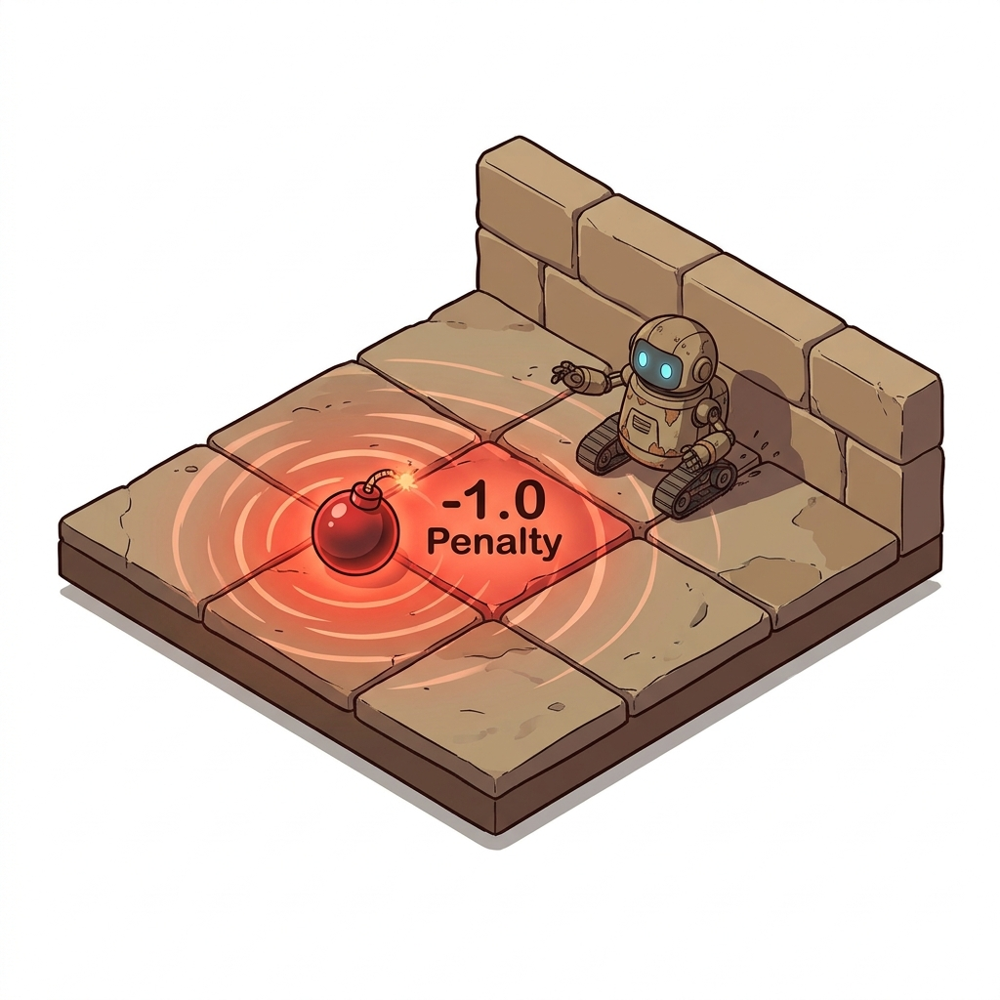
그림 10-2-44 폭탄(-1.0) 칸에서 뿜어져 나오는 강한 위험 척력 파동이 에이전트를 벽 쪽으로 밀어내어 안전 완충지대를 형성하는 원리이러한 특성 덕분에 SARSA는 실제 물리 로봇이나 자율주행차처럼 “학습 과정이나 주행 도중 실수를 저지르면 심각한 파손이 발생하는 현실 시스템”에서 대단히 안전하고 안정적인 제어기로 널리 사랑받고 있습니다.
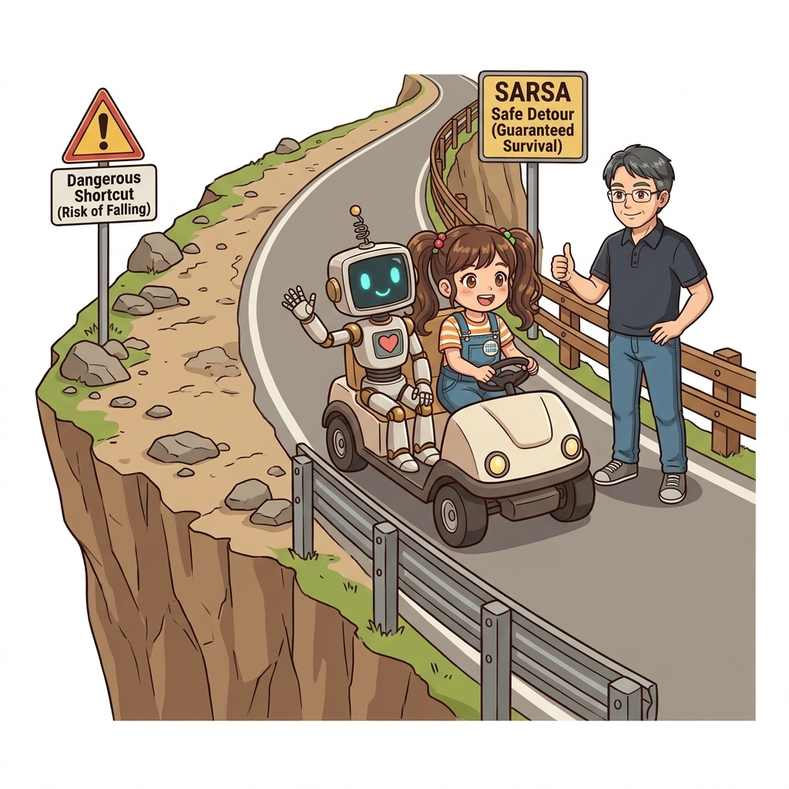
그림 10-2-45 절벽 도로 운전 비유: 바람이 불어 10% 확률로 미끄러질 수 있는 아찔한 지름길 절벽 대신, 튼튼한 가드레일이 쳐진 안전 우회로를 선택해 여유롭게 드라이브를 즐기는 SARSA의 지혜10.2.4 핵심 정리: SARSA 3대 핵심 기둥
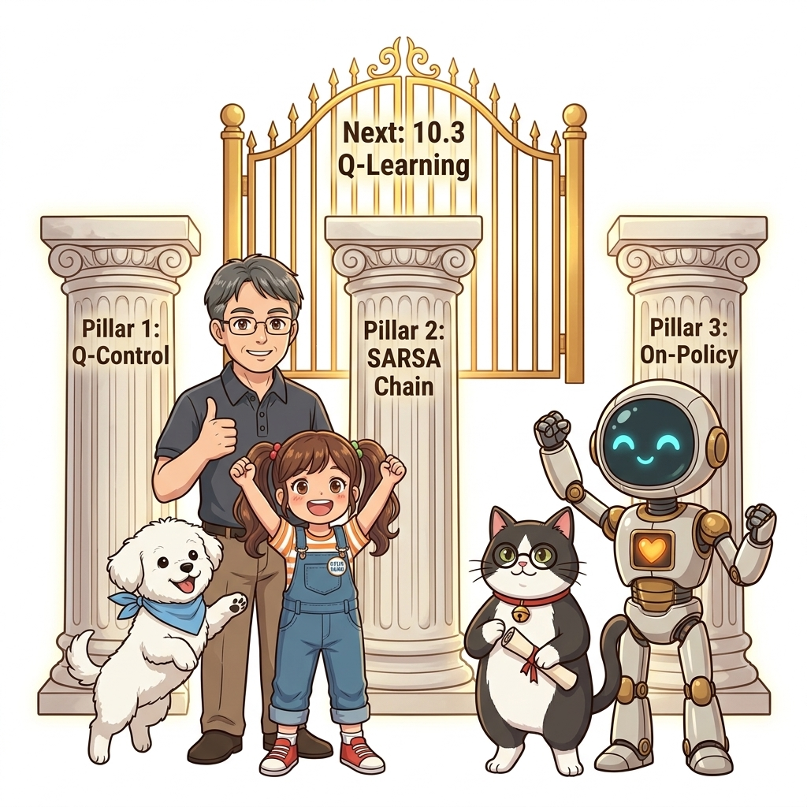
그림 10-2-46 SARSA 3대 핵심 기둥 기념비와 다음 10.3 오프-정책 Q-러닝으로의 힘찬 출항 피날레| SARSA 핵심 기둥 | 핵심 내용 요약 | 비유 및 물리적 의미 |
|---|---|---|
| 1. 모델 프리 제어의 열쇠: Q 함수 | 환경 모델(p, r) 없이도 argmax Q(s, a)만으로 즉시 최적 행동을 선택 |
갈림길마다 세워진 명확한 점수 표지판 |
| 2. 5단계 체인 갱신 (S-A-R-S-A) | 한 걸음 전 가치 갱신을 위해 다음 행동 At+1까지 결정하는 2-스텝 슬라이딩 윈도우 | 2칸 컨베이어 벨트와 종단 플러시 레버 |
| 3. 온-정책 안전제일주의 (Conservative) | 자신의 10% 탐색 실수를 가치에 솔직히 반영하여 위험 구역을 스스로 멀리 우회 | 절벽 옆 지름길 대신 가드레일 우회로 선택 |
그림 10-2-47 대강당 강단에서 SARSA의 안전제일 철학을 열정적으로 전수하시는 이호진 교수님과 기립박수로 화답하는 도로시 연구팀
👨🏫 이호진 교수님의 직강 노트:
“강화학습에서 제어(Control)의 문을 연 역사적 알고리즘이 바로 SARSA입니다. 자신의 실수 가능성(ε)까지 가치 함수에 솔직하게 녹여내는 SARSA의 ‘겸손하고 안전한 태도’는 현실 세계의 피지컬 AI를 설계할 때 무엇보다 중요한 덕목입니다. 실패했을 때 기계가 망가지거나 사고가 나면 안 되니까요!”
그림 10-2-48 소형 로봇 팔을 들고 피지컬 AI 로봇 제어에서 안전과 겸손이 갖는 결정적 가치를 강의하시는 이호진 교수님
🐱 조교 지니의 응원 노트:
“도로시와 여러분, 다섯 글자 S-A-R-S-A의 리듬을 타셨나요? 버퍼에 2개의 데이터가 들어올 때까지 기다렸다가 즉시 갱신하는 2칸 슬라이딩 윈도우의 묘미를 꼭 기억해 주세요!
그렇다면 질문! 만약 위험 따위 두려워하지 않고, ‘실수할 확률’을 과감히 무시한 채 오직 이론상 최고의 지름길만을 돌파하는 상남자 알고리즘이 있다면 어떨까요? 다음 10.3절에서 오프-정책의 절대강자 Q-러닝(Q-Learning)이 바로 그 해답을 들고 찾아옵니다냥!”
그림 10-2-49 ‘Next Chapter: 10.3 Q-Learning!’ 황금 깃발을 펼쳐 들며 오프-정책 최강자로의 출격을 예고하는 지니와 환호하는 도로시 탐험대